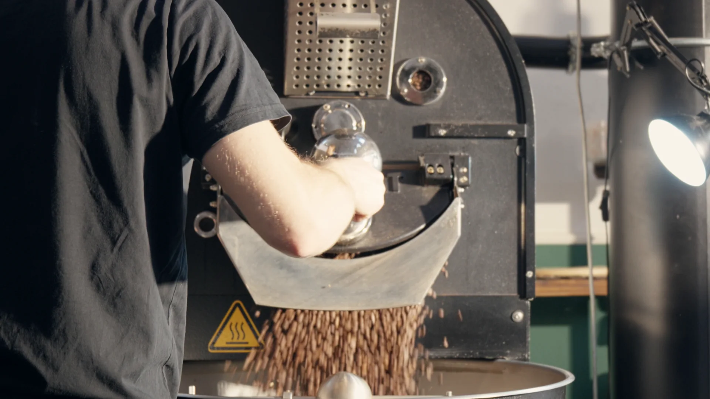
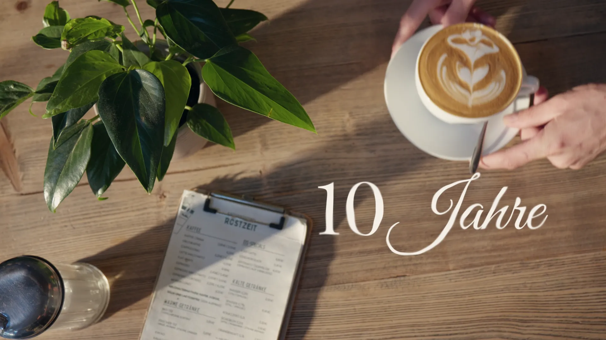
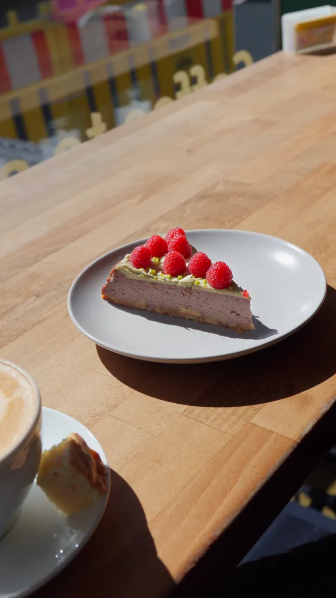

Auftrag · Imagefilm · Reels · 2026
Zum zehnjährigen Jubiläum der Kaffeerösterei ist ein Imagefilm entstanden, der die Zeit herunterzählt: 120 Monate, 3.653 Tage, 87.672 Stunden — bis zu dem einen Kaffee, um den sich alles dreht.
Röstmaschine, Bohnen, Latte Art: echte Abläufe statt Inszenierung, natürliches Licht und ein warmer, ruhiger Look. Gedreht und gegradet in 4K, ausgeliefert in 16:9, 4:3 und 9:16 — für Website, Feed und Story.
Daneben betreue ich Röstzeit laufend mit Kurzvideos für Instagram: Konzept, Dreh, Schnitt, Color-Grading und Sounddesign aus einer Hand.
Für den besten Eindruck empfehle ich, die Qualität auf Maximum zu stellen.

Imagefilm · 10 Jahre Röstzeit

Reel · Kaffeerösterei